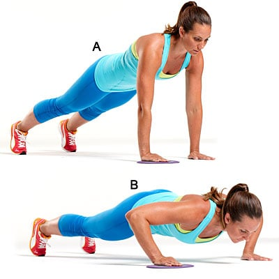

" Dancing is like Dreaming Your feet. (c) Tipos de flexiones en las manos."
Privacy policy
Esta Política de privacidad describe cómo se recopila, utiliza y comparte su información personal cuando visita o realiza una compra en el Sitio.
Cuando visita el Sitio, recopilamos automáticamente cierta información sobre su dispositivo, incluida información sobre su navegador web, dirección IP, zona horaria y algunas de las cookies que están instaladas en su dispositivo. Además, a medida que navega por el Sitio, recopilamos información sobre las páginas web individuales o los productos que ve, qué sitios web o términos de búsqueda lo remitieron al Sitio e información sobre cómo interactúa con el Sitio. Nos referimos a esta información recopilada automáticamente como "Información del dispositivo".
Los "archivos de registro" rastrean las acciones que ocurren en el Sitio y recopilan datos, incluida su dirección IP, tipo de navegador, proveedor de servicios de Internet, páginas de referencia / salida y marcas de fecha / hora.
Las "balizas web", las "etiquetas" y los "píxeles" son archivos electrónicos que se utilizan para registrar información sobre cómo navega por el Sitio.
Además, cuando realiza una compra o intenta realizar una compra a través del Sitio, recopilamos cierta información suya, incluido su nombre, dirección de facturación, dirección de envío, información de pago (incluidos los números de tarjeta de crédito), dirección de correo electrónico y teléfono número. Nos referimos a esta información como "Información de pedido".
Cuando hablamos de "Información personal" en esta Política de privacidad, estamos hablando tanto de Información del dispositivo como de Información de pedido.
Usamos la Información del pedido que recopilamos generalmente para cumplir con cualquier pedido realizado a través del Sitio (incluido el procesamiento de su información de pago, la organización del envío y el suministro de facturas y / o confirmaciones de pedido).
Usamos la Información del dispositivo que recopilamos para ayudarnos a detectar posibles riesgos y fraudes (en particular, su dirección IP) y, en general, para mejorar y optimizar nuestro Sitio.
Compartimos su información personal con terceros para ayudarnos a utilizar su información personal, como se describe anteriormente. También utilizamos Google Analytics para ayudarnos a comprender cómo nuestros clientes usan el Sitio; puede leer más sobre cómo Google usa su información personal aquí: https://www.google.com/intl/en/policies/privacy/. También puede optar por no participar en Google Analytics aquí: https://tools.google.com/dlpage/gaoptout.
Finalmente, también podemos compartir su información personal para cumplir con las leyes y regulaciones aplicables, para responder a una citación, orden de registro u otra solicitud legal de información que recibimos, o para proteger nuestros derechos.
Como se describió anteriormente, utilizamos su información personal para proporcionarle anuncios dirigidos o comunicaciones de marketing que creemos que pueden ser de su interés. Para obtener más información sobre cómo funciona la publicidad dirigida, puede visitar la página educativa de Network Advertising Initiative ("NAI") en http://www.networkadvertising.org/understanding-online-advertising/how-does-it-work.
Facebook: https://www.facebook.com/settings/?tab=ads
Google: https://www.google.com/settings/ads/anonymous
Bing: https://advertise.bingads.microsoft.com/en-us/resources/policies/personalized-ads
Además, puede optar por no participar en algunos de estos servicios visitando el portal de exclusión voluntaria de Digital Advertising Alliance en: http://optout.aboutads.info/.
Tenga en cuenta que no modificamos las prácticas de uso y recopilación de datos de nuestro Sitio cuando vemos una señal de No rastrear desde su navegador.
Si es un residente europeo, tiene derecho a acceder a la información personal que tenemos sobre usted y a solicitar que se corrija, actualice o elimine su información personal. Si desea ejercer este derecho, comuníquese con nosotros a través de la información de contacto a continuación.
Además, si usted es un residente europeo, notamos que estamos procesando su información para cumplir con los contratos que podríamos tener con usted (por ejemplo, si realiza un pedido a través del Sitio), o para perseguir nuestros intereses comerciales legítimos. listados arriba. Además, tenga en cuenta que su información se transferirá fuera de Europa, incluidos Canadá y Estados Unidos.
Cuando realiza un pedido a través del Sitio, mantendremos su Información de pedido para nuestros registros a menos que y hasta que nos solicite que eliminemos esta información.
Podemos actualizar esta política de privacidad de vez en cuando para reflejar, por ejemplo, cambios en nuestras prácticas o por otras razones operativas, legales o reglamentarias.
Tipos de flexiones en las manos.
Tipos de flexiones en las manos.
Privacy policy
"Tipos de flexiones en las manos."
Albert Einstein.
Latest Events
2021.06.22 08:08
Flexiones: cómo hacerlas de forma correcta | CuidatePlus
2021.06.22 08:08
Cómo colocar las manos al hacer flexiones: diferencias entre .
2021.06.22 08:08
Cómo colocar las manos en flexiones - Flexiones pecho o .
2021.06.22 08:08
10 tipos de flexiones para aumentar masa muscular